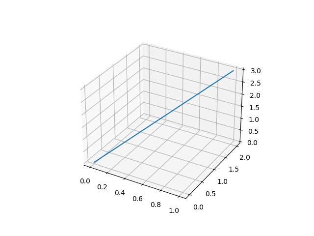
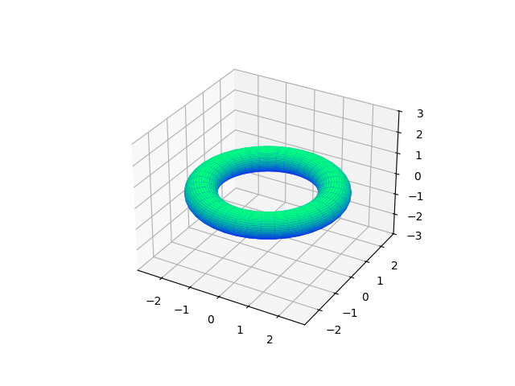
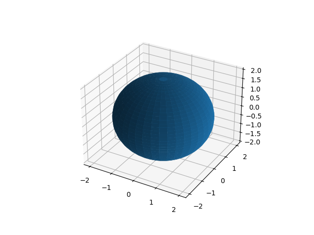
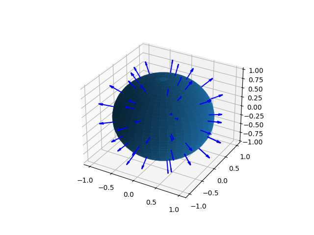
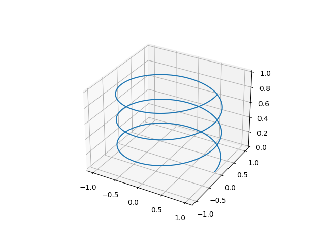

Curvas e Superfícies (3D)
ParametricCurve3D
Uma curva paramétrica 3D definida por três instâncias de Function2D — uma para cada coordenada — avaliada para t ∈ [0, 1].
import space.ParametricCurve3D
import plane.functions.Polynomial
import utils.linspace
import kotlin.math.PI
// Linha reta de (0,0,0) a (1,2,3)
val linha = ParametricCurve3D(
xParametricFunction = Polynomial(listOf(0.0, 1.0)), // x(t) = t
yParametricFunction = Polynomial(listOf(0.0, 2.0)), // y(t) = 2t
zParametricFunction = Polynomial(listOf(0.0, 3.0)) // z(t) = 3t
)
val pontoCentral: Point3D = linha(0.5) // Point3D(0.5, 1.0, 1.5)
// Avaliar em múltiplos parâmetros
val pontos: List<Point3D> = linha(linspace(0.0, 1.0, 50))Visualização
// requer geomez-visualization
linha.plot()
ParametricSurface3D
Uma superfície paramétrica 3D definida por três instâncias de Function3D mapeando (t, s) → (x, y, z).
Definindo uma superfície
Implemente as três funções de coordenadas usando objetos anônimos ou lambdas:
import space.ParametricSurface3D
import space.functions.Function3D
import kotlin.math.cos
import kotlin.math.sin
// Toro: r = 2 (raio maior), a = 0.5 (raio do tubo)
val toro = ParametricSurface3D(
xParametricFunction = object : Function3D {
override fun invoke(t: Double, s: Double) = (2 + 0.5 * cos(s)) * cos(t)
},
yParametricFunction = object : Function3D {
override fun invoke(t: Double, s: Double) = (2 + 0.5 * cos(s)) * sin(t)
},
zParametricFunction = object : Function3D {
override fun invoke(t: Double, s: Double) = 0.5 * sin(s)
}
)
Ou herdar diretamente para manter a organização:
class Esfera(val raio: Double) : ParametricSurface3D(
xParametricFunction = object : Function3D {
override fun invoke(t: Double, s: Double) = raio * cos(t) * sin(s)
},
yParametricFunction = object : Function3D {
override fun invoke(t: Double, s: Double) = raio * sin(t) * sin(s)
},
zParametricFunction = object : Function3D {
override fun invoke(t: Double, s: Double) = raio * cos(s)
}
)Avaliando um único ponto
val esfera = Esfera(raio = 1.0)
val p: Point3D = esfera(t = 0.0, s = Math.PI / 2) // equador em t=0Avaliando sobre uma malha
import utils.linspace
import utils.meshgrid
val (T, S) = meshgrid(
linspace(0.0, 2 * Math.PI, 40),
linspace(0.0, Math.PI, 40)
)
// Retorna três objetos SimpleMatrix (um por coordenada)
val (X, Y, Z) = esfera(T, S)Visualização
// requer geomez-visualization
import utils.linspace
import utils.meshgrid
val (T, S) = meshgrid(
linspace(0.0, 2 * Math.PI, 40),
linspace(0.0, Math.PI, 40)
)
esfera.plot(T, S)
Vetor normal
Calcule a normal numérica da superfície em qualquer par de parâmetros:
val normal: Vector3D = esfera.numericalNormalDirection(t = 0.5, s = 1.0)
// A normal está ancorada no ponto da superfície
println(normal.position) // o ponto na superfícieAmostre normais ao longo da superfície e sobreponha-as no gráfico da esfera:
// requer geomez-visualization
import utils.linspace
import utils.meshgrid
val esfera = Esfera(raio = 1.0)
// Grade de parâmetros grosseira para as normais
val tValues = linspace(0.0, 2 * Math.PI, 8)
val sValues = linspace(0.5, Math.PI - 0.5, 6)
val normais: List<Vector3D> = tValues.flatMap { t ->
sValues.map { s -> -esfera.numericalNormalDirection(t, s) }
}
// Grade fina para a malha da superfície
val (T, S) = meshgrid(
linspace(0.0, 2 * Math.PI, 40),
linspace(0.0, Math.PI, 40)
)
pythonExecution {
val (fig, ax) = esfera.addPlotCommands(T, S)
normais.addPlotCommands(fig, ax, scale = 0.3)
show()
}
Curve3D
Uma sequência ordenada de valores Point3D — o equivalente 3D de Curve2D. Útil para armazenar curvas discretizadas ou como resultado de projetar curvas 2D no espaço 3D.
import space.Curve3D
import space.elements.Point3D
val helice = Curve3D(
(0..100).map { i ->
val t = i / 100.0 * 2 * Math.PI
Point3D(cos(t), sin(t), t / (2 * Math.PI))
}
)
Visualizando uma curva 2D em 3D após mudança de base
import plane.Polygon2D
import plane.CoordinateSystem2D
import space.CoordinateSystem3D
import space.Curve3D
import space.elements.Direction3D
import units.Angle
val quadrado = Polygon2D(listOf(
Point2D(0.0, 0.0), Point2D(1.0, 0.0),
Point2D(1.0, 1.0), Point2D(0.0, 1.0)
))
// Inclinar o polígono 45° e elevá-lo para 3D
val sistemaInclinado = CoordinateSystem3D(
xDirection = Direction3D.MAIN_X_DIRECTION.rotate(
Direction3D.MAIN_Z_DIRECTION, Angle.Degrees(45.0)
) as Direction3D,
yDirection = Direction3D.MAIN_Z_DIRECTION,
zDirection = Direction3D.MAIN_Y_DIRECTION.rotate(
Direction3D.MAIN_Z_DIRECTION, Angle.Degrees(45.0)
) as Direction3D
)
val curva3D = Curve3D(
quadrado.changeBasis(
asWrittenIn = sistemaInclinado,
to = CoordinateSystem3D.MAIN_3D_COORDINATE_SYSTEM
)
)
curva3D.points.plot() // requer geomez-visualization